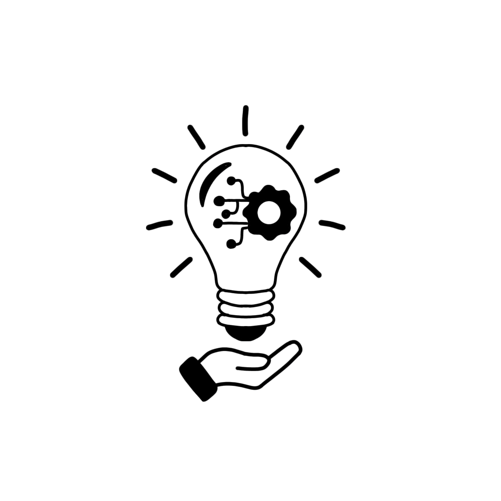

Dispositivos individuais sincronizados em um único sistema.
Monitore a corrente elétrica de cada elêtronico via placa Arduino e tenha tudo em um site e app unicos.

Cada dispositivo eletrônico conectado a uma placa Arduino com sensor de corrente ACS712.
Dashboard único na web e no app com todos os eletrônicos sincronizados, leitura agendada pelo usuário com histórico prolongado.
Identifique picos de corrente, receba alertas e reduza desperdícios.
Crie sua conta para acessar o monitoramento dos seus dispositivos e gerenciar sua rede de sensores. Após o cadastro, você poderá adquirir o kit completo com a placa Arduino e os módulos de medição.
✅ Dashboard interativo com gráficos
✅ Controle via APP e WEB